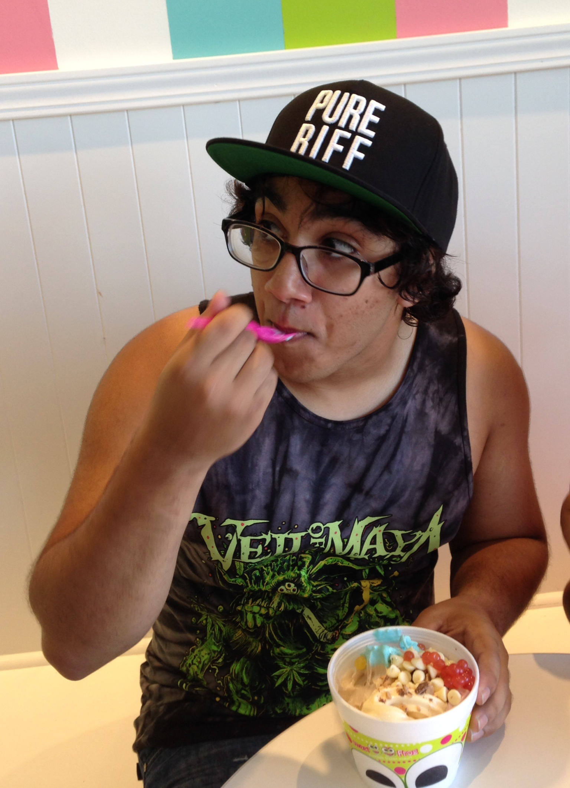

//Reach Out To Me

I am always looking for new projects work on. I enjoy talking about problems people are facing and what kinds of solutions we can create to help solve them. If you have anything exciting you are working on, want to talk about your next idea, or just need a second pair of eyes on something, shoot me a message.